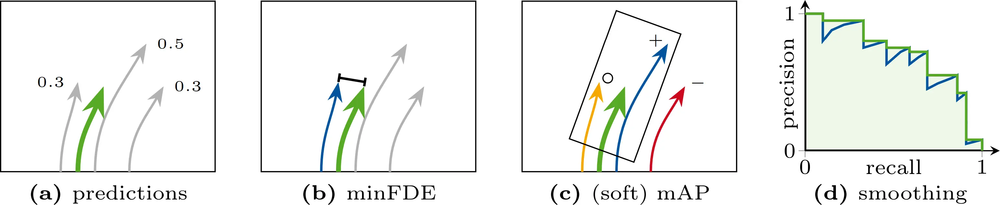
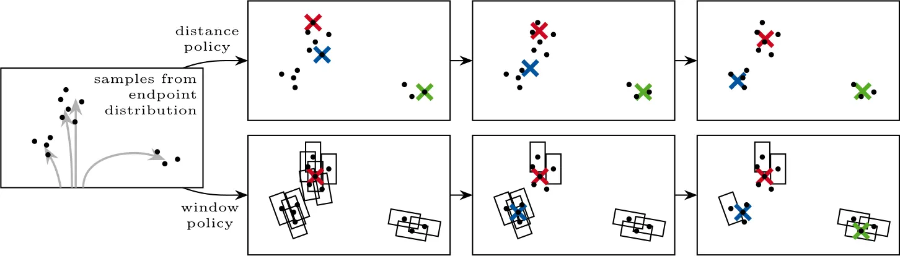
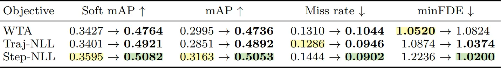
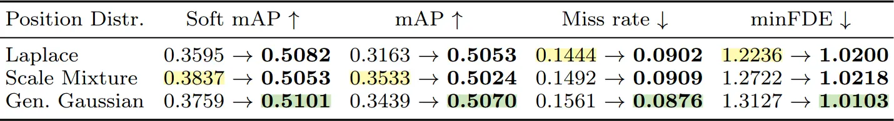
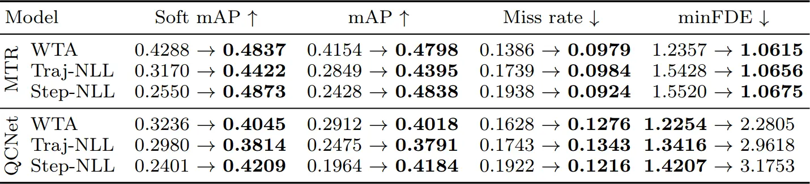
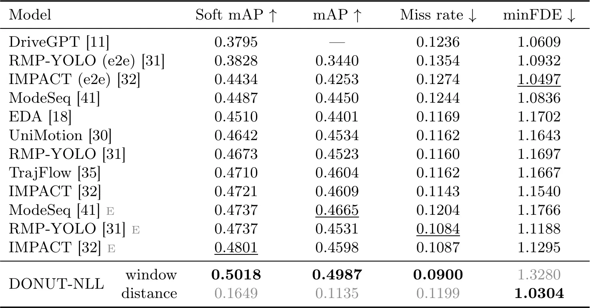

Accurate trajectory forecasting of surrounding traffic participants is a core capability for autonomous driving, enabling vehicles to anticipate behavior and plan safe maneuvers. We observe that current state-of-the-art forecasting models on Argoverse 2 and the Waymo Open Motion Dataset tailor their training objectives to the different benchmark metrics. Because these metrics encourage conflicting behavior, we propose a paradigm change for trajectory forecasting: training models with metric-agnostic probabilistic objectives and treating metric optimization as a downstream task applied to the predictive distribution. Concretely, we introduce Trajectory Distribution Evaluation (TraDiE) policies, metric-specific policies that map a predictive distribution to the set of K trajectories and confidences required by trajectory forecasting metrics. We evaluate this framework by introducing DONUT-NLL, which adapts the training objective of the state-of-the-art trajectory forecasting model DONUT to directly optimize the predictive distribution. Using our policies, DONUT-NLL achieves state-of-the-art results on all metrics of the Waymo motion prediction benchmark.

(a) A trajectory prediction model outputs predictions with assigned confidences.
(b) For the distance-based metric minFDE, the endpoint distance between ground truth and closest prediction is calculated.
(c) For the window-based metric (soft) mAP, an oriented window is placed around the ground-truth endpoint. The highest-confidence trajectory within the window (+) counts as a true positive, additional trajectories within the window (○) are either counted as false positives (mAP) or ignored (soft mAP). Predictions outside the window (−) count as false positives.
(d) To obtain the (soft) mAP, a precision-recall curve is created for each confidence score over the entire dataset and then smoothed; the area under the curve is the final metric.
Crucially, these metrics reward conflicting goals: minFDE improves if many endpoints are close to the main mode, whereas endpoints within the same window in (soft) mAP get penalized or ignored.

Both policies start from samples of the endpoint distribution (•) of the model's prediction (left). Both policies output new endpoints (×, ×, ×) which aim to optimize the metric under the predictive distribution.
For minFDE (top row), we initialize the new endpoints randomly and directly optimize the minFDE error given the samples from the model's predictive distribution.
For (soft) mAP (bottom row), we put an evaluation rectangle around each of the samples, and iteratively select the point which is covered by the most rectangles as the next endpoint. Rectangles already covered are omitted from the next iterations. Confidences are computed as the proportion of rectangles covered by an endpoint.
If optimizing the metrics under the model's predictive distribution produces strong benchmark results, this indicates that the model has learned an accurate representation of uncertainty in the real world.
For the main experiments, we use our previous work DONUT, which achieves SOTA results on Argoverse 2. The default winner-takes-all (WTA) loss directly optimizes the minFDE metric instead of aiming for a well-calibrated predictive distribution. For this reason we propose DONUT-NLL which directly optimizes the distribution. We implement two variants: Traj-NLL uses a mixture weight per trajectory, whereas Step-NLL uses a weight per timestep.



The above results provide a number of key takeaways:

@inproceedings{knoche2026tradie,
title = {{Towards Metric-Agnostic Trajectory Forecasting}},
author = {Knoche, Markus and de Geus, Daan and Leibe, Bastian},
booktitle = {ECCV},
year = {2026}
}